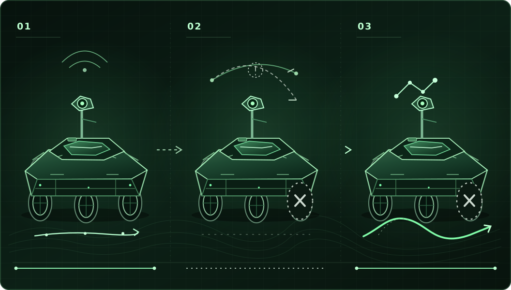

UNABHÄNGIGE FORSCHUNG · VÆRINGJAR II
Was bleibt nach einem Ausfall?
Wenn Stillstand selbst zur Gefahr wird, muss ein System erkennen, was es noch leisten kann, ob seine Modelle verlässlich sind und wann eine stabile Rekonfiguration möglich ist.
S(t) ∈ [0, 1]Verbleibende Missionsfähigkeit auf einer Skala von null bis eins

VÆRINGJAR II
Das Projekt entdecken
Neu: Thema der Doktordissertation bestätigt, 27.10.2026 ↗ · 7 Publikationen und 3 Vorträge ↗
Drei ForschungsfragenMissionsfähigkeit, Modellvalidität und zulässige Rekonfiguration.